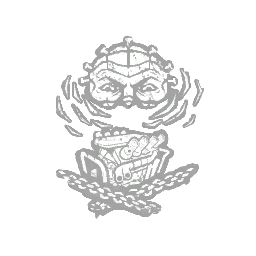
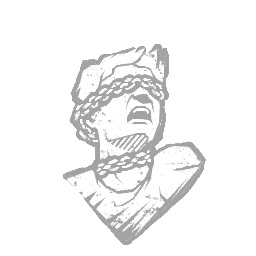
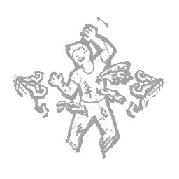

地牢修女 Cenobite
- 难度
- 4
- 移速
- 4.6
- 恐惧范围
- 32 米
- 能力
- 痛苦召唤
- 性别
- Man
- 出身
- English
- 演员
- Doug Bradley (Original Actor)
背景故事
有人视之为恶魔，有人视之为天使。钉头是探索体验深渊的先驱，沉溺于快感与痛苦交织的无尽战栗。当那名为「悲恸构装」的谜题魔匣——通往另一维度的钥匙——在实体领域中被发现时，它落入好奇之人手中便只是时间的问题。一旦匣子被开启，他便降临了。接下来发生的一切，是甜美而绵长的苦痛，并自此蔓延了整个领域。
专属技能

僵局
Deadlock

咒术：玩物
Hex: Plaything

血狱钩：痛苦馈赠
Scourge Hook: Gift of Pain
通用技能 任意杀手均可使用
苦涩低语
Bitter Murmur
淘汰弱者
Cull the Weak
捕鹿人
Deerstalker
煎熬
Distressing
咒术：命运愚者
Hex: Fortune's Fool
咒术：无人幸免于死
Hex: No One Escapes Death
咒术：狩猎快感
Hex: Thrill of the Hunt
黑暗中
In the Dark
隐秘
Insidious
铁掌
Iron Grasp
让他们等着
Keep Them Waiting
毫无保留
No Holds Barred
血狱钩：怪诞圣地
Scourge Hook: Monstrous Shrine
血狱钩：泣血之伤
Scourge Hook: Weeping Wounds
看他们逃窜
See How They Run
破碎希望
Shattered Hope
邋遢屠夫
Sloppy Butcher
暗影间谍
Spies from the Shadows
表现失常
Underperform
不依不饶
Unrelenting
耳语
Whispers
附加品
- 稀有 弯钉 Bent Nail
- 稀有 燃烧的蜡烛 Burning Candle
- 传说 敲牙者之牙 Chatterer's Tooth
- 活动 工程师之牙 Engineer's Fang
- 罕见 闪烁的电视 Flickering Television
- 精贵 弗兰克的心 Frank's Heart
- 传说 油腻黑镜片 Greasy Black Lens
- 传说 穿刺铁丝 Impaling Wire
- 活动 虹彩哀悼盒 Iridescent Lament Configuration
- 精贵 拉里之血 Larry's Blood
- 精贵 拉里遗骸 Larry's Remains
- 稀有 皮条 Leather Strip
- 罕见 液化血浆 Liquified Gore
- 稀有 活蟋蟀 Lively Crickets
- 传说 原始痛苦 Original Pain
- 罕见 串起的老鼠 Skewered Rat
- 精贵 弗兰克切片 Slice of Frank
- 罕见 变质食物 Spoiled Meal
- 精贵 折磨之柱 Torture Pillar
- 罕见 蠕动的蛆 Wriggling Maggots